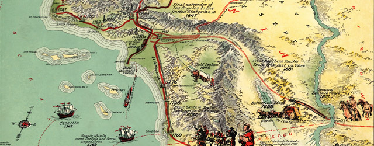

Homepage

History

Culture

Events

Tourism

Resorts

|
The Foundation of Los Angeles
The great city of Los Angeles was founded in 1781. It was called El Pueblo de Nuestra Senora la Reina de Los Angeles de Porcincula. (Our Lady the Queen of the angels of Porcincula). At first there was only a handful of families but by 1800 it had a population of 315. The Plaza Catholic Church was built in 1822. The settlement of Los Angeles grew steadily. Then in 1847 US forces captured Los Angeles. With the discovery of gold in California in 1848 Americans rushed to live in Los Angeles and the surrounding area. In 1850 Los Angeles was incorporated. Then in 1851 Los Angeles gained its first newspaper. By 1870 the population of Los Angeles had risen to 5,614. However in the winter of 1861-1862 Los Angeles suffered severe floods. That was followed by two years of drought. Nevertheless Los Angeles recovered. In the late 19th century many people migrated to Southern California for the sake of their health. The climate was believed to heal or at least improve many conditions. Meanwhile from the 1870s the orange industry in California boomed. In 1874 the first streetcar began operating in Los Angeles. Then in 1876 Los Angeles was connected to San Francisco by railroad. Furthermore the University of Southern California was founded in 1880. In 1892 oil was discovered in Los Angeles. As a result the city grew very rapidly and by 1900 the population of Los Angeles was over 100,000. Meanwhile the Bradbury Building was built in 1893. Los Angeles in the 20th Century In the early 20th century many Japanese migrated to South California. So did many Mexicans. Furthermore from the time of the First World War large numbers of African Americans came to live in Los Angeles. Meanwhile in 1904 Abbot Kinney built the city of Venice. However the growing city in an arid climate faced a major problem supplying its people with water. Los Angeles aqueduct was built in 1908-1913 to bring water to the city. Also in 1913 Cecil B. DeMille hired a barn in the suburb called Hollywood for film making. In the following years the film industry in Los Angeles blossomed. During the early 20th century Los Angeles continued to boom and by the early 1920s it had overtaken San Francisco in size. By 1939 it had a population of over 1.5 million. The Biltmore Hotel was built in 1923. Also in 1923 the famous Hollywood sign was first erected. Hollywood Roosevelt Hotel was built in 1927. City Hall was built in 1928. Union Station was built in 1939. However like the rest of the world Los Angeles suffered during the depression of the 1930s. Between 1935 and 1939 many 'Okies' fleeing the dust bowl fled to the Los Angeles region. Los Angeles boomed again during World War II (although its Japanese citizens were interned). However all did not go smoothly in Los Angeles in the 20th century. In the summer of 1943 there were riots called the Zoot Suit riots in which Mexicans were attacked. Then in 1965 Los Angeles was again rocked by riots. On 11 August police stopped and questioned an African American. In the ensuing riots 34 people were killed. In 1992 4 police officers beat an African American driver named Rodney King. However at their trial the officers were acquitted. The result was 3 days of rioting during which left 58 people were killed. In 1994 Los Angeles was struck by an earthquake. It measured 6.7 on the Richter Scale. The earthquake killed 57 people and injured thousands. It also caused billions of dollars of damage. Yet Los Angeles soon recovered. Many famous buildings were erected in Los Angeles in the late 20th century and the early 21st. Watts Towers was built in 1954 by Simon Rodia. Theme Building was erected in 1961. US Bank Tower was built in 1989 and Walt Disney Concert Hall was built in 2003. Meanwhile the first light rail line opened in 1990. Meanwhile in the late 20th century manufacturing industry in Los Angeles declined. However service industries boomed. Tourism is now a flourishing industry in Los Angeles. A Museum of Tolerance opened in 1993. Los Angeles is also a thriving financial center. In the late 20th century the Hispanic population of Los Angeles grew dramatically. Meanwhile the percentage of white non-Hispanics fell. Today the population of Los Angeles is 3.9 million.  |
Website made by Tony Trinh
All Text and Content is property of myself and some referenced from Wikipedia , Google and various websites.
Graphics are from Google Images and Various Websites.